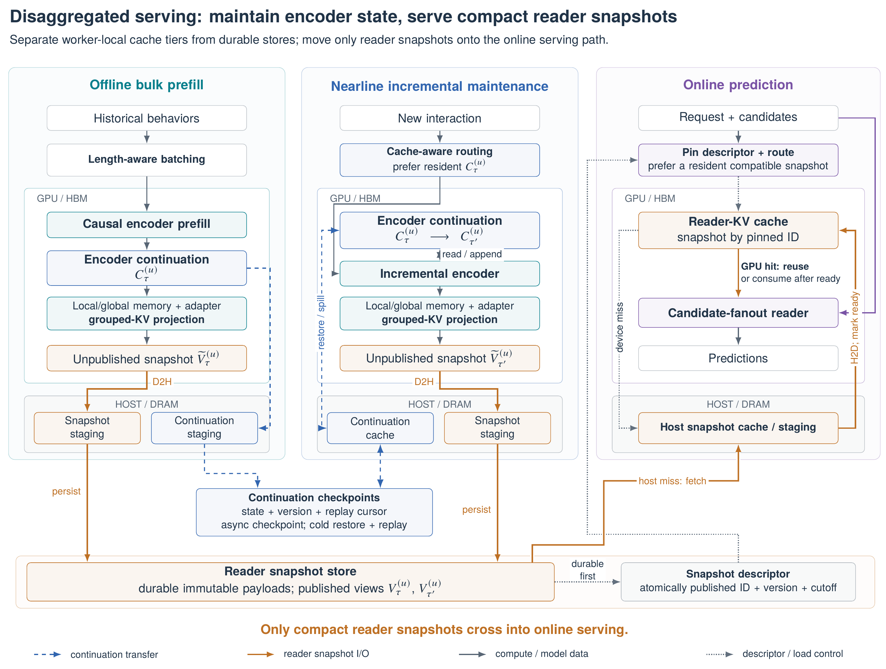
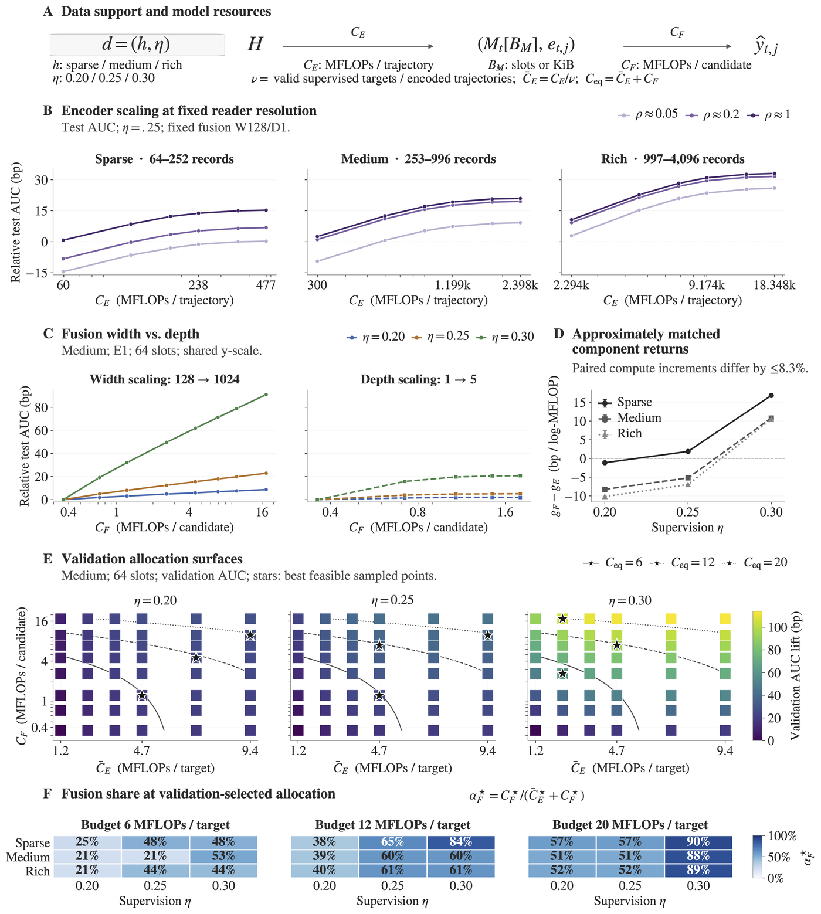
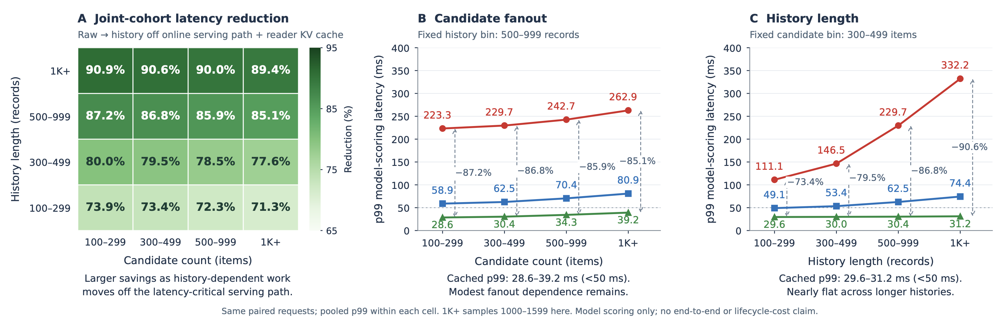

A single user request carries many candidates, and two consecutive requests share most of their behavior history. If every candidate pushes the whole history through the model again, the longer the history and the more candidates, the more repeated computation happens online. LinkedIn's TransX encodes the user history ahead of time into a compact "behavior memory", and each candidate only has to read that memory with its own query. The paper goes beyond speed: it uses scaling experiments to ask which module new compute should go into. Online, the core model improves CTR by 6.02% and conversion by 4.45% over the production HSTU (a generative sequential recommender from Meta), and disaggregated serving cuts total serving cost to 22% of colocated serving. One thing should be said up front: this core model spends about 5 times the per-request compute of the HSTU baseline, and at matched compute the two have almost the same offline quality. So a large share of the online gain comes from "the money saved can pay for a bigger model".
1. The problem: why one history gets computed again and again
Sequential recommenders such as HSTU process the user history and the candidates in one sequence, re-encoding the history from scratch on every request. A user can have thousands of behaviors, and each request scores many candidates, so the most expensive part, history processing, sits on the online path that must return within tens of milliseconds. Making the model bigger directly makes online serving more expensive.
The other common approach is a two-tower model that compresses the user into one vector ahead of time. But one vector blends different interests and cannot answer "which past behaviors does this candidate relate to". TransX takes a middle road and keeps a set of readable memory slots rather than one vector. History processing can be shared offline, and each candidate still reads it in its own way.
The authors split this into two coupled questions. First, which computation can be reused, and over what scope. Second, whether new compute should go to history encoding, memory capacity or candidate fusion. The model's division into modules answers both at once.
2. Method: encode once, extract memory per cutoff, let each candidate read

The model is a chain of three parts. The first is a causal encoder that processes user behaviors in time order; each position sees only earlier behaviors, so predicting an exposure never uses clicks that happened later. The second is memory construction: at the cutoff for each request, the encodings of the most recent behaviors are kept as-is as local memory, and older history is pooled in blocks into a few global summaries; the two are concatenated and projected into keys and values for attention, which the paper calls behavior-memory KV (key–value). The number of memory slots is far smaller than the history length. The third is candidate fusion: each candidate builds a query through the same feature interface as historical behaviors, cross-attends to the memory, and feeds output heads for clicks, conversions and so on.
Training is organized along the same boundary. Logs are usually one row per candidate, so a user's many requests store and encode the overlapping history again and again. TransX packs a user's behavior trajectory and all its requests into one training unit: the trajectory is encoded once, the memory for each request cutoff is extracted and fanned out to all candidates of that request, and the gradients from all candidates flow back into the same encoding.
On that basis, the authors first train the core model on clicks and conversions, then keep the shared encoder and memory and train separate readers and output heads for retrieval and preference ranking. Generative retrieval and generative ranking were also explored offline, but their quality is more sensitive to semantic-ID design and autoregressive decoding, and the authors explicitly treat them as exploration; they were not launched.
3. Serving: three clocks and immutable snapshots

Serving is split into three paths, each scaling with its own rhythm and bottleneck. Offline bulk prefill computes state for all active users when a model rolls out, optimizing for throughput. Nearline updates advance the encoder state and publish new memory when a user acts, optimizing update throughput within a freshness budget. Online prediction only fetches the memory snapshot, then runs candidate fusion and scoring.
Two objects are easy to confuse here. The encoder continuation state lets the nearline path resume encoding where it left off, and is about 496 KiB per user at the median; the behavior memory read online is only about 8.5 KiB. The former stays nearline and never enters the online cache. Before publication the memory is also quantized: a calibrated orthogonal rotation, then bits allocated by per-coordinate energy, shrinking the median size from 28 KiB in BF16 to 8.5 KiB, with test AUC changing by no more than 2×10⁻³.
Immutable snapshots are what make this division of labor work. A request pins a version when it starts, and when an update publishes a new version, in-flight scoring never reads a half-old, half-new state. When state is missing or too stale, the request falls back to an older compatible snapshot or a non-sequential fallback model, while rebuilding happens asynchronously in the background. In production, nearline update lag is 1.2 seconds at the median and 1.8 seconds at p90, more than 92% of traffic reads the latest compatible snapshot, and about 3% goes to the fallback model, mostly cold-start users with too little history.
4. Scaling experiments: where should compute go
The authors split compute into three coordinates: encoder compute per trajectory , the memory budget exposed online , and fusion compute per candidate . Data are split along two axes too: history richness, cut by history-length quantiles into sparse, medium and rich groups, and supervision at three levels, 0.20, 0.25 and 0.30. Encoder compute is shared by many candidates while fusion runs once per candidate, so the authors first convert encoder compute to a per-training-target basis by its reuse count before comparing.

The first finding is diminishing returns from the encoder. At fixed memory resolution and fusion capacity, a bigger encoder raises test AUC in all three user groups, with most of the gain in the lower and middle part of the sweep and much less beyond about four layers. Since memory resolution is unchanged, this gain does not come from "showing more state to the online path"; the encoder packs useful information better into memory of the same size.
The second finding is that the more supervision, the more compute should go to fusion. Widening fusion from 128 to 1024 raises test AUC by about 90 basis points (1 basis point is 0.0001) at , and by less than 10 at ; adding fusion layers saturates early. Under a fixed total compute budget, the fusion share of the validation-selected best configuration also rises with supervision, from about half to about nine tenths at the largest budget, showing that with more supervision the model needs stronger candidate reading. The authors explain this with a decomposition of log loss: total loss equals irreducible uncertainty, plus "information lost by the memory", plus "readout mismatch". The memory budget limits the first, fusion capacity the second; with ample supervision, readout mismatch is more worth optimizing.
The third finding is that a bigger model does not need proportionally more memory. The authors define the "adequate" memory budget as the smallest one within 3 AUC basis points of the highest-resolution memory. As encoder and fusion compute grow, the adequate memory density stays stable or even falls, and so does the absolute KV footprint. This matters for the system: the model can keep growing while the state transferred and cached online does not have to grow with it.
Two discounts apply to these experiments. Supervision only covers 0.20 to 0.30, a span of just 1.5 times, and nearly all the jump in fusion returns falls between 0.25 and 0.30, so extrapolation needs care. The authors also state that the best allocation depends on the model family, data and compute range, and these patterns are not a universal scaling law.
5. Online results and system efficiency
The three variants ran independent A/B tests on different product surfaces, each against its own production model, and the authors stress that the columns are not comparable with each other. All lifts have p below 10⁻⁴ except feed views.
| Metric | Core model vs HSTU | Retrieval variant vs production embedding retrieval | Ranking variant vs production learning-to-rank model |
|---|---|---|---|
| CTR | +6.02% | +2.96% | not reported |
| Conversion | +4.45% | +0.05% | +1.33% |
| DAU | +0.26% | +0.04% | +0.10% |
| Feed views | +0.08% | +0.06% | not reported |
Split by history length, the core model's CTR lift is 5.5%, 6.0% and 6.2% for sparse, medium and rich users, showing the gain is not confined to users with rich histories. The core model also ran a five-week holdout with no decay in gains; the authors credit daily retraining and redeployment, and the training and prefill optimizations are what make daily updates feasible.
On system efficiency, training is compared on 32 H200s against a straightforward FSDP (fully sharded data parallel) baseline, with model, data and batch size fixed. Because each trajectory is encoded once, supervised-target throughput rises 84%, compute utilization goes from about 11% to 18%, and time to convergence drops from about 25 hours to 13, which is also why daily updates are possible. Online, each H200 serves about 250 requests per second with p99 end-to-end scoring latency of 49 ms.

Compared with an online path that processes history synchronously, reading cached memory cuts p99 scoring latency by 71% to 91%. Latency grows mainly with candidate count and hardly with history length, matching the structure in which heavy history computation has left the online path. Scaling an HSTU-style baseline to the same per-request compute as TransX, the two differ by less than 10⁻³ in offline click AUC, while TransX's request throughput per H200 is about 4 times higher.
The cost account needs to include the new work moved offline. Online GPU use drops from 5.8 to 1.1 GPU hours per million requests, down 81.2%; but it adds 7.5 CPU hours of nearline work per million behavior updates and 3.2 GPU hours of offline prefill per deployment. After converting all resources to a common cost basis, total cost is 22% of colocated serving. Storage and network stay roughly flat, because the online path no longer moves raw behavior history and moves compact memory instead.
Freshness has a price too. The authors relaxed the allowed update lag step by step online. Moving p90 from 1.8 seconds to 1.2 minutes lowers CTR by 0.21% and in-session CTR by 0.37%; relaxing to 18 minutes costs another 0.12% and 0.18%; beyond that, losses shrink quickly. The losses concentrate in the seconds-to-minutes range, showing that nearline updates need not be synchronous with requests, but their service level directly affects short-term recommendation quality.
6. Limitations and practical implications
The authors list three limitations. The scaling patterns hold only within the studied data, supervision levels, model family and deployment envelope, and do not uniquely identify the mechanisms behind them. Maintaining continuation state and memory brings freshness, storage, version-compatibility and recovery costs; some absolute costs are omitted under disclosure policy, and the numbers are not a full lifecycle accounting. A shared memory and frozen backbone are not necessarily right for every task; if a task needs information the encoder did not keep, swapping the reader is not enough.
For recommender systems with long histories, the most useful lesson is to first measure how much computation is repeated: how much history is re-encoded between consecutive requests of one user, and across the candidates of one request. If the share is high, moving history encoding nearline and reading compact memory online frees compute that can pay for a bigger model. The scaling experiments can be copied the same way: sweep encoder, memory and fusion separately, record results by history richness and supervision, and do not report only a total parameter count. On the serving side, monitor memory age, fallback share and version-incompatibility rate alongside latency and CTR.